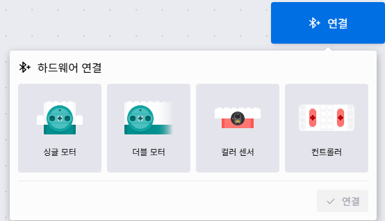
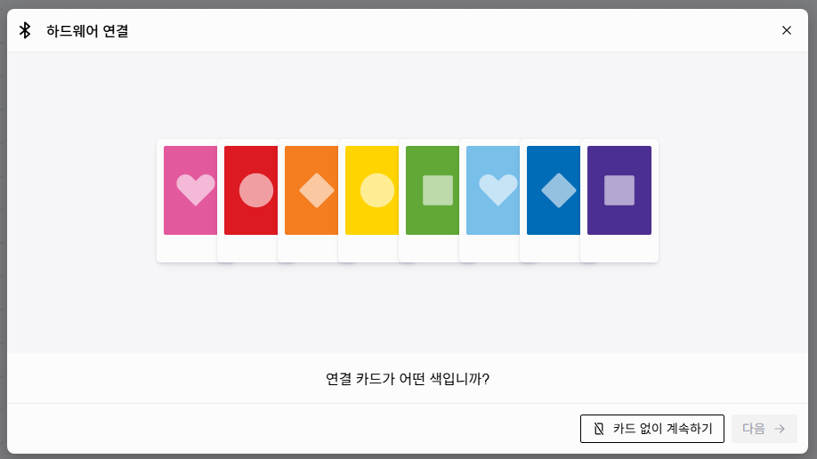
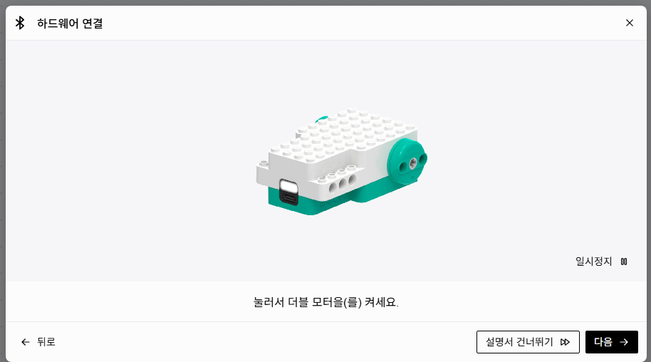
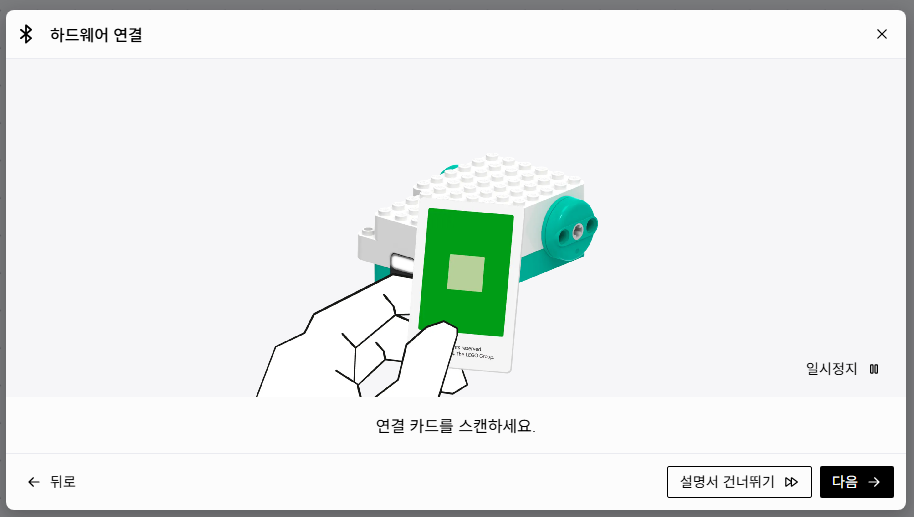
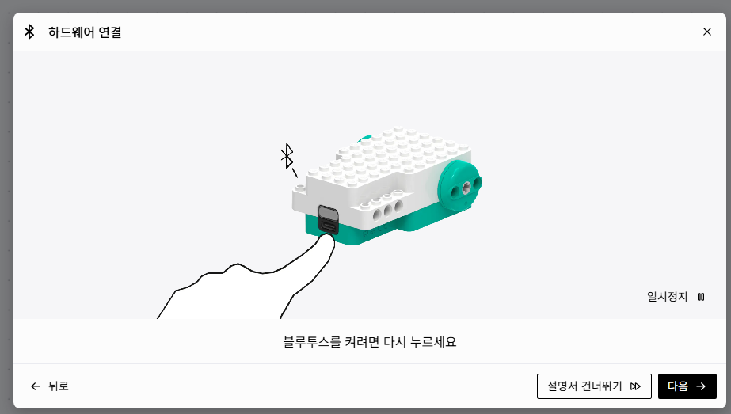

체험 순서
조립하고, 코딩하고, 직접 움직여 봐요
레고로 조립하기
더블 모터에 바퀴와 센서를 달아 로봇 자동차를 만들어요.
- 더블 모터 양쪽에 바퀴 끼우기
- 컬러 센서는 앞쪽 아래에, 바닥을 보도록 달기
- 조이스틱 조종을 하려면 컨트롤러 준비하기
하드웨어 연결하기
레고 코딩 사이트를 열고 블루투스로 로봇과 연결해요.
- 오른쪽 위 '연결' 버튼 누르기
- 연결 카드를 스캔하고 블루투스 켜기
- 하드웨어를 고르고 '페어링' 누르기
코딩하기
세 코드 중 하나를 골라 블록을 쌓아요.
- 라인트레이서 · 키보드 조종 · 조이스틱 조종 중 고르기
- 아래 블록 코드를 보고 똑같이 만들기
- 블록을 눌러 무슨 일을 하는지 읽어 보기
작동시켜 보기
▶ 버튼을 누르고 로봇을 직접 움직여요.
- 라인트레이서는 트랙 위에 올려 두기
- 키보드나 컨트롤러로 운전해 보기
- 숫자를 바꿔 보는 도전 과제 풀기
완성된 자동차가 준비되어 있어요. 조립을 건너뛰고 ② 하드웨어 연결하기부터 시작해도 돼요.
레고 코딩 사이트 열기 ↗하드웨어 연결하기
코딩하기 전에 로봇과 컴퓨터를 블루투스로 연결해요
레고 코딩 사이트
code.legoeducation.com
이 사이트에서 블록 코딩을 하고 로봇과 연결해요. 크롬 브라우저에서 열어 주세요.

'연결' 버튼 누르고 하드웨어 고르기오른쪽 위 파란 연결 버튼을 눌러요. 연결할 하드웨어(더블 모터, 컬러 센서, 컨트롤러)를 골라요.
연결 카드 색 고르기로봇과 함께 있는 연결 카드의 색을 골라요. 카드가 없으면 '카드 없이 계속하기'를 눌러요.
더블 모터 켜기더블 모터의 버튼을 눌러 전원을 켜요.
연결 카드 스캔하기연결 카드를 더블 모터에 가까이 대서 스캔해요.
블루투스 켜기버튼을 한 번 더 눌러 블루투스를 켜요.- 하드웨어 선택하고 '페어링' 누르기목록에서 연결할 하드웨어를 고르고 페어링 버튼을 눌러요. 연결되면 코딩을 시작할 수 있어요.
코드마다 연결할 하드웨어
하드웨어가 여러 개면 위 과정을 하나씩 반복해서 연결해요.
바퀴로 움직이기
세 코드 모두 마지막 블록에서 두 바퀴 속도를 정해요
이 블록에는 숫자 칸이 두 개 있어요. 앞 칸은 왼쪽 바퀴, 뒤 칸은 오른쪽 바퀴 속도(%)예요. 로봇에는 운전대가 없지만 두 바퀴 속도를 다르게 하면 방향을 바꿀 수 있어요. 마이너스(−)는 바퀴가 뒤로 돈다는 뜻이에요.
코드 체험
세 가지 방법으로 로봇을 움직여 보세요
라인트레이서
컬러 센서로 바닥의 검은 선을 보고, 선 가장자리를 스스로 따라가요.
블록 코드
블록 설명
블록이나 설명을 누르면 서로 짝이 표시돼요.
- 1▶ 을(를) 클릭했을 때▶ 버튼을 누르면 시작해요. 이 코드는 두 묶음이 함께 움직여요.앱의 ▶ 시작 버튼을 누르면 아래 블록이 실행돼요. 이 코드는 시작 블록이 두 개라서 묶음 A와 묶음 B가 동시에 실행돼요.이벤트 블록이에요. 시작 블록이 두 개라서 두 스크립트가 동시에(병렬로) 실행돼요. 묶음 A는 센서 값을 지켜보는 일, 묶음 B는 로봇을 제어하는 일을 나눠 맡아요.
- 2무한안에 있는 블록을 계속, 계속 되풀이해요.안에 든 블록을 멈추지 않고 계속 되풀이해요. 그래서 로봇은 쉬지 않고 센서를 다시 보고 바퀴 속도를 고쳐요.무한 반복은 센서 읽기 → 계산 → 모터 출력을 끝없이 되풀이하는 제어 루프예요. 출력 결과가 다시 센서 값에 영향을 주기 때문에 피드백 제어라고 해요. 루프가 빨리 돌수록 반응도 빨라요.
- 3반사 쓰기센서가 바닥을 보고 숫자를 알려 줘요. 검은색은 작은 숫자, 흰색은 큰 숫자예요.컬러 센서가 바닥에 빛을 비추고, 되돌아온 빛의 양(반사값)을 화면에 숫자로 써요. 검은 선은 빛을 흡수해서 숫자가 작고, 흰 바닥은 빛을 많이 반사해서 숫자가 커요.컬러 센서가 빛을 비추고 되돌아온 빛의 세기를 0~100 범위의 반사값으로 재요. '반사 쓰기'는 이 값을 콘솔에 출력해서, 검은색과 흰색 값을 재는 센서 보정(캘리브레이션)에 써요.
- 40.2초 기다리기0.2초 쉬어요. 숫자가 천천히 보이게 해 줘요.숫자가 너무 빨리 지나가지 않게 0.2초씩 쉬어요. 1초에 5번 써요. 묶음 A는 사람이 센서 값을 확인하려고 넣은 코드라서 로봇 움직임은 바꾸지 않아요.출력 주기를 0.2초(1초에 5번)로 제한해요. 묶음 B에는 기다리기가 없어서 제어 계산은 이보다 훨씬 자주 실행돼요. 모니터링과 제어의 실행 주기가 다르다는 점을 눈여겨보세요.
- 5오차 = 반사 − 6060은 검은색과 흰색의 가운데 숫자예요. 오차는 가운데에서 얼마나 벗어났는지 알려 줘요.60은 검은색과 흰색의 중간인 기준값이에요. 오차는 센서가 기준에서 얼마나 벗어났는지 알려 줘요. 흰 바닥 쪽이면 +, 검은 선 쪽이면 −가 돼요.오차 e = 측정값 − 목표값이에요. 목표값(설정값) 60은 (검은색 + 흰색) ÷ 2로 정해요. 오차의 부호는 벗어난 방향을, 크기는 벗어난 정도를 알려 줘요.
- 6이동 시작하기흰 바닥 쪽이면 왼쪽으로, 검은 선 쪽이면 오른쪽으로 꺾어요. 많이 벗어나면 많이 꺾어요.왼쪽 바퀴는 7 − 오차×0.4, 오른쪽 바퀴는 7 + 오차×0.4예요. 7은 기본 속도, 0.4는 얼마나 세게 꺾을지 정하는 수예요. 많이 벗어날수록 많이 꺾어요. 벗어난 만큼 고치는 이 방법을 비례 제어라고 해요.비례 제어(P 제어)예요. 조향량 = Kp × e (Kp = 0.4)이고, 왼쪽 = 기본 속도 − Kp·e, 오른쪽 = 기본 속도 + Kp·e예요. Kp가 크면 빨리 반응하지만 지그재그로 흔들리고, 작으면 커브에서 선을 놓쳐요. 오차의 변화량(D)과 쌓인 오차(I)까지 쓰면 PID 제어가 돼요.
지금 로봇이 계산하는 값
콘솔 · 묶음 A가 0.2초마다 쓴 반사값
센서가 보는 곳에 따라 달라지는 바퀴 속도 (기준값 60, 곱하는 수 0.4)
| 센서 위치 | 반사 | 오차 | 왼쪽 바퀴 | 오른쪽 바퀴 | 움직임 |
|---|---|---|---|---|---|
| 검은 선 한가운데 | 20 | −40 | 23 | −9 | 오른쪽으로 세게 돌아요 |
| 선 쪽에 조금 더 | 40 | −20 | 15 | −1 | 오른쪽으로 꺾어요 |
| 선 가장자리 | 60 | 0 | 7 | 7 | 똑바로 가요 |
| 흰 바닥 쪽에 조금 더 | 80 | +20 | −1 | 15 | 왼쪽으로 꺾어요 |
| 흰 바닥 | 100 | +40 | −9 | 23 | 왼쪽으로 세게 돌아요 |
실제 반사값은 바닥 종이와 조명에 따라 달라요. 먼저 묶음 A로 검은 선과 흰 바닥의 값을 재고, 두 값의 중간을 기준값으로 정해요. 예) 검은색 20, 흰색 100 → (20 + 100) ÷ 2 = 60
한 줄 정리
로봇은 검은 선과 흰 바닥의 경계를 따라가요. 흰색이 보이면 왼쪽으로, 검은색이 보이면 오른쪽으로 꺾으면서요.
고등 심화 · 더 생각해 보기
조향량 = Kp × e · 왼쪽 = 7 − Kp·e · 오른쪽 = 7 + Kp·e (Kp = 0.4, e = 반사 − 60)
- 시뮬레이터에서 Kp(곱하는 수)를 0.1씩 올리며 지그재그가 시작되는 값을 찾아보세요. 기본 속도를 올리면 그 값이 어떻게 달라지나요?
- PD 제어로 바꾸기: 변수 '이전 오차'를 만들고, 조향량 = Kp·e + Kd·(e − 이전 오차)로 계산한 뒤 이전 오차에 e를 넣어요. 흔들림이 줄어들어요.
- 컬러 센서를 바퀴에서 더 앞쪽에 달면 앞을 미리 내다보는 효과가 생겨 더 안정적으로 달려요. 왜 그런지 설명해 보세요.
도전 과제 · 슬라이더를 바꿔 보고 눌러서 확인해요
곱하는 수를 0으로 바꾸면?
오차에 0을 곱하면 언제나 0이라서 두 바퀴가 똑같이 7로 돌아요. 로봇이 선을 보지 않고 똑바로만 가다가 선을 벗어나요.
곱하는 수를 1.5로 크게 하면?
조금만 벗어나도 아주 세게 꺾어서 지그재그로 흔들리며 가요. 너무 작아도, 너무 커도 안 좋아서 알맞은 값을 찾아야 해요.
기본 속도를 20으로 올리면?
빨리 달리는 만큼 굽은 길에서 꺾을 시간이 모자라 선을 놓치기 쉬워요. 빠르게 달리려면 곱하는 수도 함께 맞춰야 해요.
키보드 조종
화살표 키로 속도와 회전을 정하고, 두 값을 더하고 빼서 바퀴 속도를 만들어요.
블록 코드
블록 설명
키를 누르면 그 키를 확인하는 블록에 파란 테두리가 생겨요.
- 1▶ 을(를) 클릭했을 때▶ 버튼을 누르면 시작해요.시작 버튼을 누르면 코드가 실행돼요.이벤트 블록이에요. 시작 버튼을 누르는 사건(이벤트)이 일어나면 아래 스크립트가 실행돼요.
- 2무한키보드를 계속 살펴봐요.키보드를 계속 확인하고 바퀴 속도를 다시 정해요.반복할 때마다 키 상태를 직접 확인하는 폴링 방식이에요. '키를 눌렀을 때' 같은 이벤트 블록을 쓰는 방식과 비교해 보세요.
- 3속도 = 0, 회전 = 0숫자를 담는 상자 두 개를 0으로 비워요. 그래서 손을 떼면 멈춰요.속도와 회전은 숫자를 담아 두는 상자, 변수예요. 반복할 때마다 둘 다 0으로 되돌려서, 키에서 손을 떼면 로봇이 멈춰요.변수 초기화예요. 반복마다 기본값 0으로 덮어써서 '아무 키도 누르지 않음 = 정지' 상태를 만들어요. 초기화가 없으면 이전 반복의 값이 남아요.
- 4만약 위 키를 눌렀다면 → 속도 40위 키를 누르면 앞으로 가요.조건이 맞을 때만 안쪽 블록을 실행해요. 위 키를 누르고 있으면 앞으로 40% 속도예요.조건문(if)으로 입력(위 키)을 출력 값(속도 40)에 연결해요. 조건이 참일 때만 안쪽 블록이 실행돼요.
- 5만약 아래 키를 눌렀다면 → 속도 −30아래 키를 누르면 뒤로 가요. 뒤로는 조금 천천히 가요.마이너스는 뒤로 간다는 뜻이에요. 뒤는 잘 안 보이니까 조금 느린 30%로 정했어요.음수는 모터의 역방향 회전이에요. 후진 속도(−30)를 전진(40)보다 낮게 잡아 안전하게 만들었어요.
- 6만약 왼쪽 키를 눌렀다면 → 회전 −20왼쪽 키를 누르면 왼쪽으로 돌아요.회전이 −이면 왼쪽으로 돌아요.회전 성분 −20을 정해요. 속도 변수와 따로 정하기 때문에 전진과 회전을 동시에 할 수 있어요.
- 7만약 오른쪽 키를 눌렀다면 → 회전 20오른쪽 키를 누르면 오른쪽으로 돌아요.회전이 +이면 오른쪽으로 돌아요. 왼쪽과 오른쪽을 함께 누르면 나중에 실행되는 이 블록의 20이 남아요.블록은 위에서 아래로 순서대로 실행돼서, 두 키를 함께 누르면 뒤에 있는 이 블록이 앞의 값을 덮어써요. 이것이 곧 우선순위예요. '만약 ~ 아니면'으로 바꾸면 우선순위가 어떻게 달라질지 생각해 보세요.
- 8이동 시작하기두 숫자를 더하고 빼서 바퀴 속도를 정해요.왼쪽 바퀴 = 속도 + 회전, 오른쪽 바퀴 = 속도 − 회전이에요. 회전이 −20이면 왼쪽 바퀴는 느려지고 오른쪽 바퀴는 빨라져서 왼쪽으로 돌아요.차동 구동 혼합식이에요. 왼쪽 = v + ω, 오른쪽 = v − ω (v는 전진 성분, ω는 회전 성분). 전진과 회전을 나눠 다루는 이 방식을 아케이드 드라이브라고 해요.
키보드의 화살표 키나 화면 버튼을 누르고 있어 보세요. 두 키를 함께 누를 수도 있어요. 미션: 파란 P 칸에 로봇을 넣고 멈추면 주차 성공!
변수 상자
| 누른 키 | 속도 | 회전 | 왼쪽 | 오른쪽 | 움직임 |
|---|---|---|---|---|---|
| 없음 | 0 | 0 | 0 | 0 | 멈춤 |
| ↑ | 40 | 0 | 40 | 40 | 앞으로 |
| ↓ | −30 | 0 | −30 | −30 | 뒤로 |
| ← | 0 | −20 | −20 | 20 | 제자리에서 왼쪽으로 |
| → | 0 | 20 | 20 | −20 | 제자리에서 오른쪽으로 |
| ↑ + ← | 40 | −20 | 20 | 60 | 왼쪽으로 꺾으며 앞으로 |
| ↑ + → | 40 | 20 | 60 | 20 | 오른쪽으로 꺾으며 앞으로 |
한 줄 정리
화살표 키가 운전대와 페달이에요. 키에서 손을 떼면 로봇이 멈춰요.
고등 심화 · 더 생각해 보기
왼쪽 = v + ω · 오른쪽 = v − ω (v = 속도, ω = 회전)
- 키보드는 눌렀다/안 눌렀다만 아는 디지털 입력이라 속도가 0에서 40으로 갑자기 바뀌어요.
- 부드럽게 출발하기: 변수 '목표 속도'를 만들고 반복마다 속도 = 속도 + (목표 속도 − 속도) × 0.2로 바꾸면 천천히 빨라지는 가속 효과가 생겨요.
- '만약 ~ (이)라면, 아니면'으로 바꿔 왼쪽 키가 우선이 되게 하려면 블록을 어떻게 배치해야 할까요?
도전 과제 · 직접 눌러 보고 확인해요
← 와 → 를 동시에 누르면?
왼쪽 블록이 회전을 −20으로 바꾼 다음, 오른쪽 블록이 다시 20으로 바꿔요. 그래서 오른쪽으로 돌아요. 블록의 순서가 결과를 바꿔요.
3번 블록(0으로 설정)이 없으면?
키에서 손을 떼도 변수에 마지막 값이 남아 있어서 로봇이 계속 움직여요. 아래 체크 상자를 켜고 확인해 보세요.
뒤로 가면서 ← 를 누르면?
속도 −30, 회전 −20이라 왼쪽 바퀴 −50, 오른쪽 바퀴 −10이에요. 두 바퀴 모두 뒤로 돌지만 왼쪽이 더 빨라서 휘어지며 후진해요.
조이스틱 조종
컨트롤러의 두 레버가 두 바퀴와 하나씩 짝을 이뤄요. 코드가 가장 짧아요.
블록 코드
블록 설명
블록이나 설명을 누르면 서로 짝이 표시돼요.
- 1▶ 을(를) 클릭했을 때▶ 버튼을 누르면 시작해요.시작 버튼을 누르면 코드가 실행돼요.이벤트 블록이에요. 시작 버튼을 누르면 아래 스크립트가 실행돼요.
- 2무한레버를 계속 살펴봐요.레버 위치를 계속 읽어서 바퀴에 전해요. 레버를 움직이는 즉시 로봇이 따라 움직여요.무한 반복으로 레버 값을 계속 읽어 바퀴에 전달해요. 계산이 없어서 입력과 출력 사이의 지연이 아주 짧아요.
- 3왼쪽 레버 위치왼쪽 레버를 얼마나 밀었는지 숫자로 알려 줘요. 가운데는 0이에요.컨트롤러 왼쪽 레버를 얼마나 밀었는지 숫자로 알려 줘요. 가운데면 0, 앞으로 밀수록 +, 뒤로 당길수록 −가 돼요.아날로그 입력이에요. 레버 위치를 −100~100 사이의 연속된 값으로 읽어요. 눌렀다/안 눌렀다 두 가지뿐인 키보드의 디지털 입력과 비교해 보세요.
- 4오른쪽 레버 위치오른쪽 레버도 똑같이 숫자를 알려 줘요.오른쪽 레버도 같은 방법으로 숫자를 알려 줘요.오른쪽 레버도 같은 범위의 아날로그 값이에요. 두 값이 서로 독립적이라서 두 바퀴를 따로 제어할 수 있어요.
- 5이동 시작하기왼쪽 레버는 왼쪽 바퀴, 오른쪽 레버는 오른쪽 바퀴를 움직여요.왼쪽 레버 값은 왼쪽 바퀴로, 오른쪽 레버 값은 오른쪽 바퀴로 그대로 보내요. 계산이 없어서 레버가 곧 바퀴예요. 탱크나 굴착기를 조종하는 방식과 같아요.입력 하나가 바퀴 하나에 1:1로 연결되는 탱크 드라이브 방식이에요. 키보드 코드의 아케이드 드라이브(v ± ω)와 비교해 보세요. 레버 하나를 속도, 다른 하나를 회전으로 써서 아케이드 방식으로 바꿀 수도 있어요.
레버를 위아래로 끌어 보세요. 손을 떼면 가운데(0)로 돌아와요. 두 손가락으로 두 레버를 함께 움직일 수 있어요.
레버 → 바퀴
| 왼쪽 레버 | 오른쪽 레버 | 움직임 |
|---|---|---|
| 가운데 0 | 가운데 0 | 멈춤 |
| 앞으로 | 앞으로 (같은 만큼) | 앞으로 똑바로 |
| 뒤로 | 뒤로 (같은 만큼) | 뒤로 똑바로 |
| 앞으로 | 뒤로 | 제자리에서 오른쪽으로 |
| 뒤로 | 앞으로 | 제자리에서 왼쪽으로 |
| 앞으로 많이 | 앞으로 조금 | 오른쪽으로 꺾으며 앞으로 |
한 줄 정리
왼손은 왼쪽 바퀴, 오른손은 오른쪽 바퀴! 두 레버를 함께 밀면 앞으로 가요.
고등 심화 · 더 생각해 보기
탱크 드라이브: 왼쪽 = 왼쪽 레버, 오른쪽 = 오른쪽 레버 → 아케이드 드라이브: 왼쪽 = 레버1 + 레버2, 오른쪽 = 레버1 − 레버2
- 레버는 미는 만큼 값이 변하는 아날로그 입력이라 속도를 세밀하게 조절할 수 있어요.
- 데드존 만들기: 손을 떼도 레버 값이 정확히 0이 아닐 수 있어요. '만약 레버 위치의 절댓값이 5보다 작다면 0으로' 처리하면 로봇이 저절로 움직이지 않아요.
- 아케이드 방식으로 바꾸면 두 값을 더했을 때 100을 넘을 수 있어요. 어떻게 처리하면 좋을까요?
도전 과제 · 레버를 움직여 확인해요
왼쪽 레버만 앞으로 밀면?
오른쪽 바퀴는 멈춰 있고 왼쪽 바퀴만 돌아서, 멈춘 오른쪽 바퀴를 중심으로 오른쪽으로 빙글 돌아요.
두 레버를 조금씩만 밀면?
레버를 미는 만큼 숫자가 정해지니까 천천히 움직여요. 키보드 코드는 속도가 40으로 정해져 있지만, 레버는 속도를 자유롭게 조절할 수 있어요.
레버를 바꿔 끼운 것처럼 하려면?
이동 블록의 두 칸을 바꿔서 오른쪽 레버 위치, 왼쪽 레버 위치 순서로 넣으면 돼요. 앞으로는 똑같이 가지만 회전 방향이 반대가 돼요.
한눈에 비교
세 코드를 한눈에 비교해요
| 항목 | 코드 1 라인트레이서 | 코드 2 키보드 조종 | 코드 3 조이스틱 조종 |
|---|---|---|---|
| 입력 | 컬러 센서 반사값 | 키보드 화살표 키 4개 | 컨트롤러 레버 2개 |
| 누가 판단해요? | 로봇이 스스로 (자율 주행) | 사람이 (원격 조종) | 사람이 (원격 조종) |
| 왼쪽 바퀴 | 7 − 오차 × 0.4 | 속도 + 회전 | 왼쪽 레버 위치 |
| 오른쪽 바퀴 | 7 + 오차 × 0.4 | 속도 − 회전 | 오른쪽 레버 위치 |
| 변수 | 오차 | 속도, 회전 | 없음 |
| 속도 조절 | 오차에 따라 계속 바뀌어요 | 정해진 값만 (40, −30, ±20) | 미는 만큼 자유롭게 |
| 닮은 기술 | 자율주행 자동차, 물류 창고 로봇 | 게임 캐릭터, RC카 | 굴착기, 탱크, 전동 휠체어 |